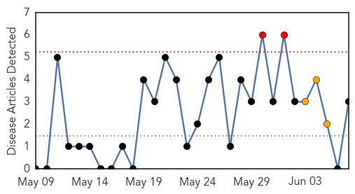
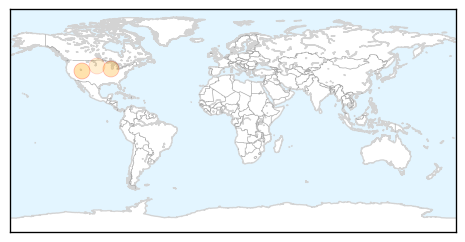
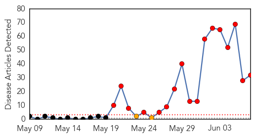
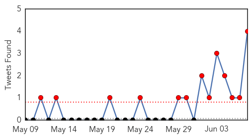
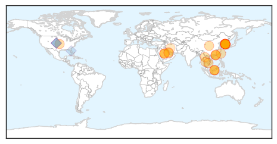
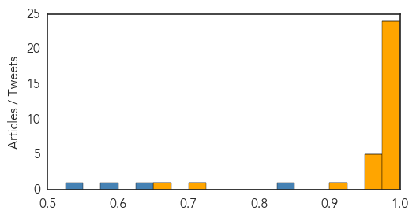

West Nile Virus
30-Day Web Trend
2 alerts, 3 warnings

30-Day Twitter Trend
0 alerts, 0 warnings

Article Locations
Article Confidences
Top Articles:
Top Tweets:
-
No tweets found for Jun 07, 2015
MERS
30-Day Web Trend
17 alerts, 2 warnings

30-Day Twitter Trend
9 alerts, 1 warnings

Article Locations
Article Confidences
Top Articles:
- 1.000
- MERS Outbreak in South Korea
- 1.000
- MERS Cases, Death Toll Rise in South Korea
- 0.999
- South Korea to track mobile phones to enforce Mers virus quarantine rules
- 0.999
- MERS stalks Korean hospital hallways
- 0.999
- S.Korea to track cellphones to prevent MERS spread; 5th person dies
- 0.999
- 6th person dies of MERS virus in South Korea
- 0.998
- [Newsmaker] Self-care essential to combating MERS
- 0.998
- Steps Taken To Keep Out MERS
- 0.998
- Global Financial Community
- 0.998
- Sixth Mers death in South Korea amid sharp rises in cases
- 0.998
- 5 dead, 14 more cases of disease confirmed in South Korea
- 0.998
- Fifth person dies of MERS virus in South Korea
- 0.997
- 5th person dies of MERS virus in South Korea
- 0.997
- CHP investigates two fever patients with travel history
- 0.996
- Mers: most people never even knew they had it
- 0.995
- MOPH tightens MERS-CoV surveillance
- 0.994
- MOPH tightens MERS-CoV surveillance
- 0.992
- South Korea announces fifth MERS death
- 0.992
- WHO Dispatches Team To Seoul After Fourth Death Reported From MERS
- 0.987
- MERS seminar held for Taiwan health workers
- 0.985
- POEA cautions OFWs in South Korea vs deadly MERS-CoV
- 0.981
- Deputy minister advises Malaysians not to travel to S.Korea to avoid MERS-CoV
- 0.977
- MERS-CoV: M’sians advised to defer South Korea visits – BorneoPost Online
- 0.976
- Malaysia General Business Sports and Lifestyle News
- 0.974
- South Korea Names Affected Hospitals as MERS Deaths Rise to Five
- 0.969
- KUNA : Fifth Corona death reported, 14 fresh cases detected in S. Korea
- 0.969
- MERS takes 5th life in Korea as cases rise by 14
- 0.963
- Palace to Pinoys in SoKor: Heed advisories on MERS-CoV
- 0.957
- Two HK reporters quarantined after covering MERS in S. Korea
- 0.922
- South Korean MERS death toll rises again
- 0.716
- Vietnam sets up 4 quick-response teams to prevent MERS-CoV
- 0.660
- Philippine gov't warns Filipinos in S. Korea against MERS infection - Xinhua
Top Tweets:
- 0.895
- AFD Blog `WHO MERS Saudi Arabia Update - 5 Hofuf Cases ' MERS-CoV http://t.co/Du2CMKQIde
- 0.861
- RT: AFD Blog `WHO MERS Saudi Arabia Update - 5 Hofuf Cases ' MERS-CoV http://t.co/Du2CMKQIde
- 0.847
- RT: ironorehopper Korea, MERS-CoV: National CDC released genome sequence of local virus isolate, uploaded to ... http:/…
- 0.687
- AFD Blog `Korea Adds 23 More MERS Cases - Total Now 87' http://t.co/OFsADwWmVI MERS-CoV
- 0.596
- AFD Blog `Korea:The MERS Hospital List' MERS-CoV http://t.co/olAvEcZx8Q
- 0.538
- RT: S. Korea-Gov reports 14 new coronavirus MERS cases & 1 death - total cases now 64, incl. 5 deaths - June 6, 2015 https:…